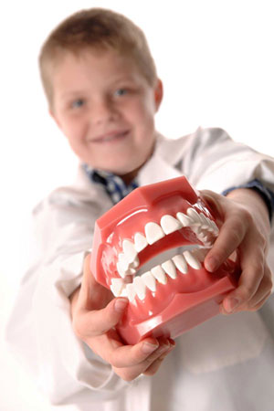

Childrens Dentistry in Evansville, Indiana • East Office (812) 479 - 8609 • West Office (812) 401-6095


Radiographs (X-Rays) are a vital and necessary part of your child’s dental diagnostic process. Without them, certain dental conditions can and will be missed.
Radiographs detect much more than cavities. For example, radiographs may be needed to survey erupting teeth, diagnose bone diseases, evaluate the results of an injury, or plan orthodontic treatment. Radiographs allow dentists to diagnose and treat health conditions that cannot be detected during a clinical examination. If dental problems are found and treated early, dental care is more comfortable for your child and more affordable for you.
The American Academy of Pediatric Dentistry recommends radiographs and examinations every six months for children with a high risk of tooth decay. On average, most pediatric dentists request radiographs approximately once a year.
Our office is particularly careful to minimize the exposure of our patients to radiation. Lead body aprons and shields will protect your child. In addition, we use only high-speed film and proper shielding which will assure that your child receives only a minimal amount of radiation exposure. Our equipment also filters out unnecessary x-rays and restricts the x-ray beam to the area of interest. With all of our safeguards, the amount of radiation received in a dental X-ray is extremely small and the risk is negligible. In fact, the dental radiographs represent a far smaller risk than an undetected and untreated dental problem.
A sealant helps protect the teeth from cavities. A sealant is a thin, plastic coating applied to the chewing surface of molars, premolars and any deep grooves (called pits and fissures) of teeth. More than 75% of dental decay begins in these deep grooves. Teeth with these conditions are hard to clean and are very susceptible to decay. A sealant protects the tooth by sealing deep grooves, creating a smooth, easy to clean surface.
Sealants can protect teeth from decay for many years, but need to be checked for wear and chipping at regular dental visits.
Sealants are easily applied by your dentist or dental hygienist and the process takes only a couple of minutes per tooth. The teeth to be sealed are thoroughly cleaned and then surrounded with cotton to keep the area dry. A special solution is applied to the enamel surface to help the sealant bond to the teeth. The teeth are then rinsed and dried. Sealant material is carefully painted onto the enamel surface to cover the deep grooves or depressions.
At Evansville Pediatric Dentistry, we offer both amalgam (silver-colored) fillings and composite (white) fillings. We believe in giving you and your family a choice.
For fillings on posterior (back) teeth, we give you, in most cases, the option of amalgam (silver) or composite (white) fillings. Silver fillings are a good treatment option, as they are durable, less expensive than white fillings and take less time to place, resulting in a shorter appointment for your child. Composite (white) fillings are a more cosmetic filling, are durable, take a little more time to place and cost a bit more.
For anterior (front) teeth, composite fillings are almost always placed. Our goal is to not only give your child a healthy smile but an attractive one as well.
Any time a filling is placed, it is important to maintain good oral hygiene habits at home and to avoid acidic and sugary foods that could contribute to recurrent (new) decay around the filling.
It is important to restore (fill) baby teeth when they become decayed since a cavity is bacteria. Bacteria multiply and can spread deeper into the tooth and to other adjacent teeth. If left untreated, a cavity on a baby tooth can cause a painful infection that could damage the developing permanent tooth which lies right beneath the baby tooth.
A pulpotomy is often referred to as a “baby root canal.” When a cavity is large enough, it can penetrate to the pulp or nerve of the tooth. The pulp contains vital material, and when a cavity reaches the pulp, the bacteria in the cavity can cause the tooth to become infected. A pulpotomy is the removal of the diseased pulp in the coronal (crown) portion of the tooth while leaving the healthy root portion of the pulp intact.
The success rate is high (approximately 90%) with this procedure, failures can result due to microscopic bacteria remaining in the tooth and/or inflammation as a result of the procedure itself A pulpotomy is performed prior to the placement of the filling or crown. This is all done in the same appointment. Your child will not know that this is taking place, as his or her tooth will be anesthetized (numb).
If left untreated, deep decay-causing infection will ultimately destroy the bone underneath the baby tooth where the permanent tooth is developing. Should this occur, extraction of the baby tooth is recommended.
A pulpectomy is indicated when bacteria and infection have involved the entire pulp or nerve of the tooth. A pulpectomy requires the complete removal of the pulp in a tooth (similar to an adult root canal), including the root portion. This procedure is indicated for primary teeth that are painful and/or beginning to abscess. This procedure has a much poorer prognosis due to the extent of the infection, but is indicated in certain situations.
A pulpectomy may be indicated for anterior teeth and to save the 2nd primary molar (the baby tooth furthest back in the mouth), especially prior to the eruption of the 1st permanent molar (6 year molar). This is because the 2nd primary molar helps guide the 6 year molar into the proper position. However, if the infection is large enough the only way to eliminate the infection may be to extract the tooth at which time a space maintainer is indicated.
A stainless steel crown is a permanent covering that fits over an original tooth that is decayed, damaged or cracked. The crowns we use are made out of stainless steel for durability. Stainless Steel Crowns are recommended when the tooth decay is too large for a filling.
Stainless steel crowns are places in one visit and are an excellent way to restore a baby tooth after damage from extensive decay. Stainless steel crowns are cemented into place and last, in most cases, until the baby tooth exfoliates (falls out) naturally.
After a stainless steel crown is placed, it is important that your child avoid sticky foods like caramel, taffy and fruit snacks, as these can “pull off” a stainless steel crown.
An anterior crown is a crown that is placed on a tooth in the front of your mouth. We use anterior crowns to treat patients with decayed, damaged or cracked front teeth. The anterior crowns that we use are either all composite material or stainless steel with white porcelain facings to give the child a more natural-looking smile.
Children who lose a primary tooth before their permanent tooth erupts are recommended to wear space maintainers. These maintainers prevent the other teeth from closing the gap and hold the space open until the permanent tooth erupts in.
Space maintainers are made of two different materials, either stainless steel or plastic. They are usually bonded to your child's teeth and later removed when the permanent tooth erupts through the gums. Some space maintainers use artificial teeth or acrylic blocks to fill in the space that need to be saved. Usually this type of space maintainer is used when the empty space is visible to others.
We recommend this type of space maintainer only after a child’s second primary molars are fully erupted through the gum tissue.
This procedure involves removing a tooth. Baby teeth may need to be extracted because they have become infected by large decay or maybe they have been traumatized and their nerves have died. They may also need to be extracted when severely crowded teeth are preventing normal eruption of permanent teeth. After a tooth is extracted, a space maintainer might be indicated to help maintain the proper spacing of the teeth.